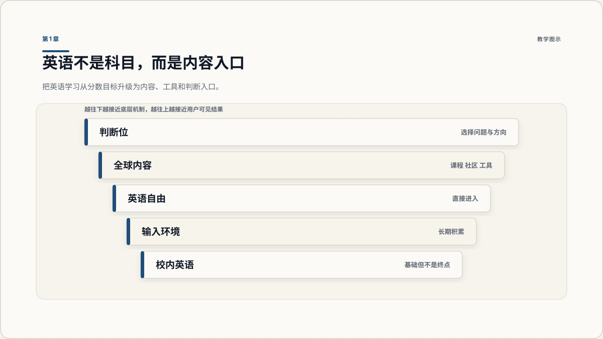
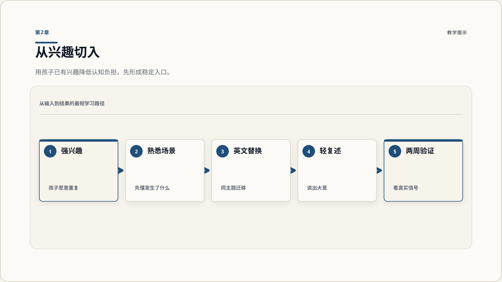
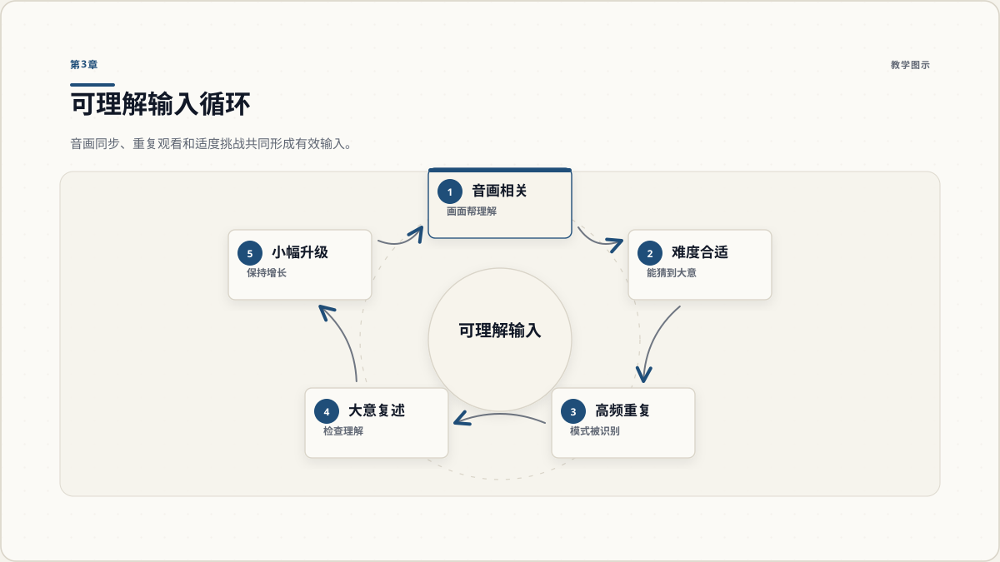
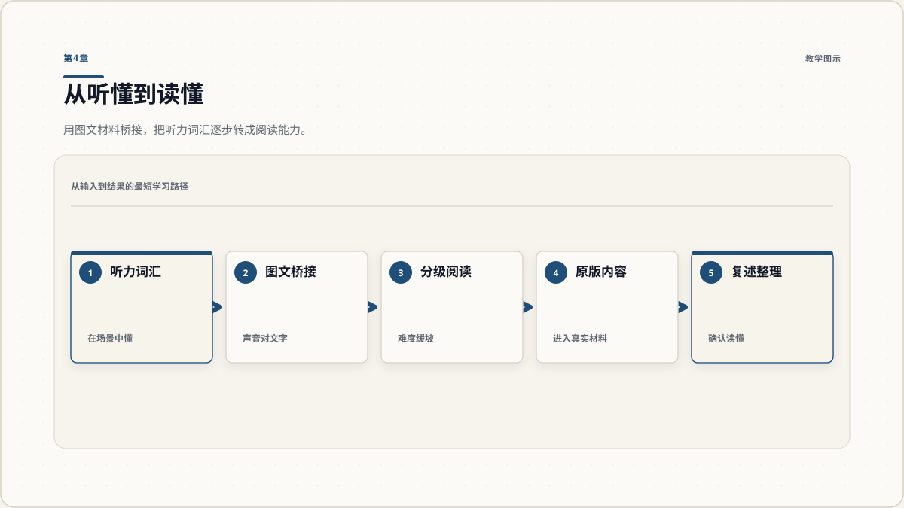
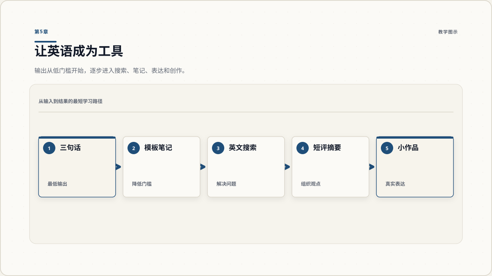
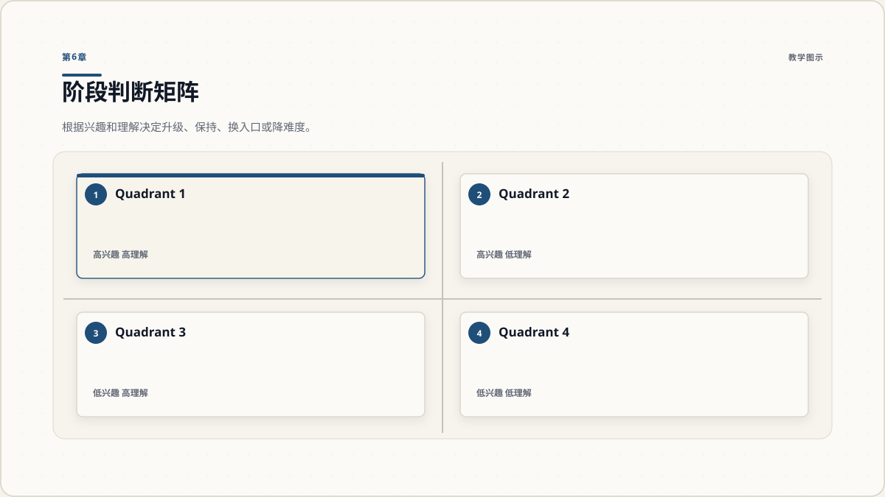
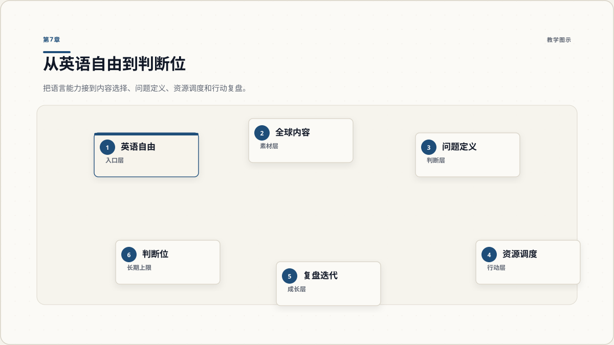

英语自由的终点不是多会几道题，而是能直接进入更大的内容世界。

好的启动点不是最专业的材料，而是孩子愿意反复进入的英文入口。

视频有用的前提，是它能变成可理解输入，而不是单纯增加屏幕时间。

阅读不是突然开始硬啃原版书，而是把听过、见过、懂过的内容文字化。

自由不是只输入，孩子要能用英语完成一个真实的小任务。

阶段判断决定路径质量：过早升级会挫败，过迟停留会浪费。

语言只是入口，能否用内容做判断和行动，才决定长期上限。